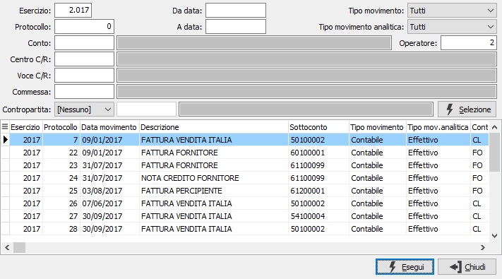
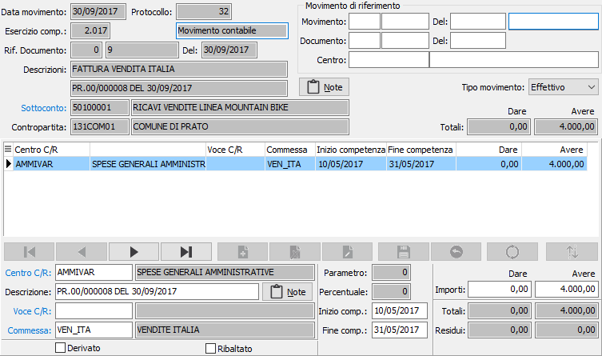

Manutenzione movimenti
Il programma consente di registrare movimenti di contabilità analitica extracontabilmente oppure visualizzare e parzialmente modificare quelli generati in automatico dalla prima nota contabile.
L’inserimento di movimenti avviene con modalità analoghe a quelle dell’inserimento dei movimenti di prima nota contabile; i movimenti inseriti dalla manutenzione sono definiti di tipo extracontabile.
Per la variazione e la cancellazione è possibile procedere facendo un doppio clic sul campo data movimento oppure premendo il tasto di zoom, si apre la finestra di selezione per ricercare il movimento da cancellare o da modificare.

La finestra di selezione consente di inserire diversi criteri di selezione tramite i quali ricercare il movimento interessato. La pressione del tasto esegui riporta alla manutenzione con il movimento selezionato.
Accedendo al programma, appare la seguente finestra video:

La parte superiore della finestra contiene i dati di testa del movimento, l'esercizio, le descrizioni, l'eventuale contropartita, se il movimento deriva dalla prima nota contabile, il sottoconto ed il totale del movimento.
È possibile inserire movimenti di tipo effettivo o previsionale utilizzando il campo "Tipo movimento"; i movimenti derivanti dalla prima nota contabile sono tutti di tipo effettivo.
In fase di immissione dopo aver inserito il valore relativo al totale, se il sottoconto è associato ad una ripartizione vengono generate, in automatico oppure a richiesta relativamente a quanto inserito nel sottoconto, le righe del movimento; i campi presenti sul rigo del movimento dipendono dalla versione e della configurazione del modulo.
Su ogni rigo viene visualizzata l'indicazione di movimento originario o derivato da un ribaltamento o da una ripartizione, è inoltre indicato se il rigo stesso è non ribaltabile, da ribaltare o già ribaltato. In quest'ultimo caso la parte in alto a destra contiene i riferimenti al movimento di riferimento.
Per gli utenti che utilizzano la versione Enterprise sarà possibile specificare periodi di competenza specifici per ogni singolo rigo della registrazione e successivamente elaborare bilanci parziali relativi a tali periodi.
Su tutti i campi codice sono presenti le funzioni di ricerca (F9) ed accesso interattivo alla tabella collegata (CTRL+W).
Al termine della registrazione, se previsto in configurazione, è possibile effettuare un controllo di quadratura tra gli importi inseriti ed il totale del movimento.
In fase di variazione, se il movimento deriva dalla prima nota contabile, sarà possibile modificare solo i dati delle singole righe e la descrizione secondaria presente sulla testa del movimento.